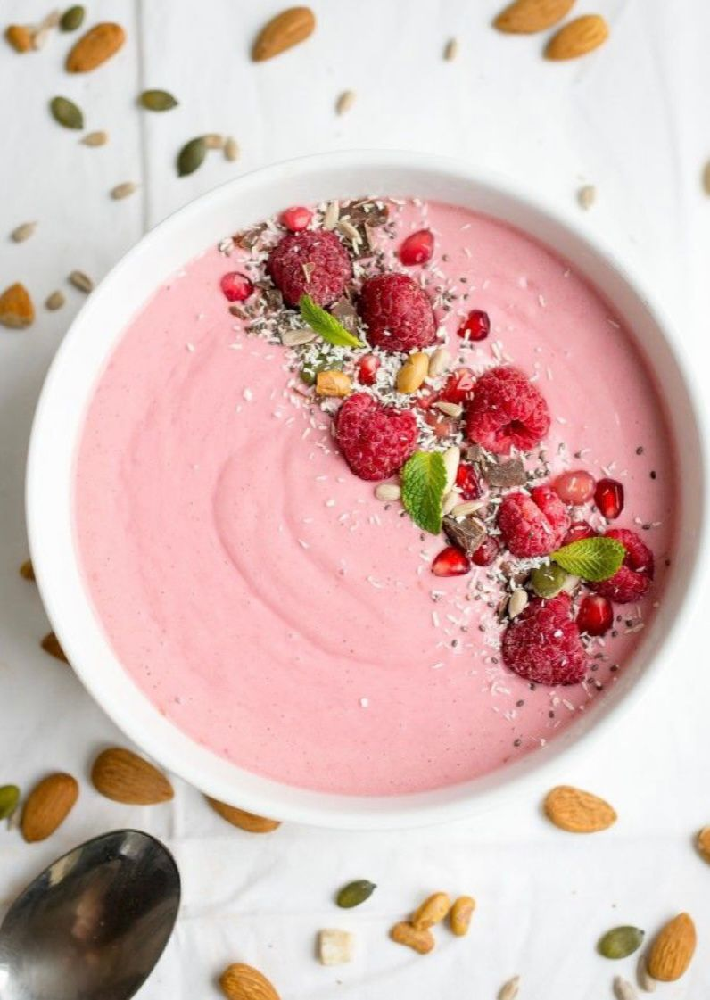
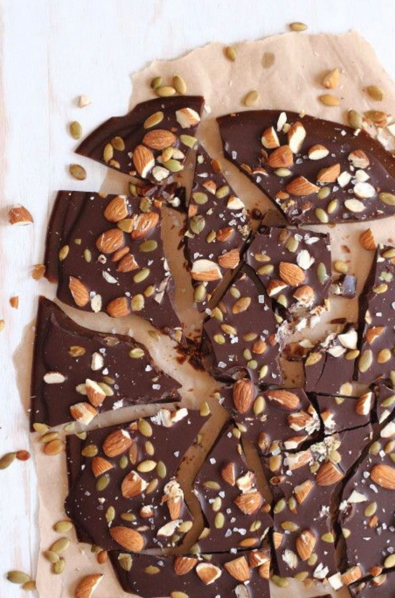

يعتبر الزبادي والتوت وجبة خفيفة لذيذة وغنية بالعناصر الغذائية، بالإضافة إلى كونها مصدراً كبيراً للكالسيوم والبوتاسيوم،
حيث إن الزبادي غني بالبروتين، والتوت أحد أفضل مصادر مضادات الأكسدة الموجودة
.
يوفر الجمع بين (100 غرام) من الزبادي كامل الدسم مع 1/2 كوب (50 غراماً) من خليط التوت،
حوالي 10 غرامات من البروتين وأقل من 150 سعرة حرارية.

الشوكولاتة الداكنة واللوز يشكلان وجبة خفيفة غنية، فهي تحتوي على نسبة عالية من المغنيسيوم
، وتوفر أونصة واحدة (25 غراماً) من كل منها حوالي 250 سعراً حرارياً إجمالاً،
اعتماداً على محتوى الكاكاو.